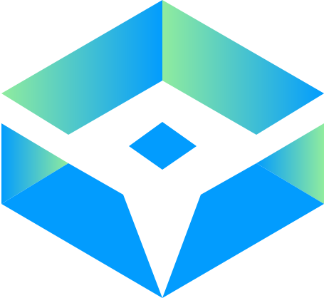

Área urbana IBGE e vias transitáveis dentro das manchas urbanas
Marque os municípios da base que entram no PDF único.
Neste aparelho a pré-visualização abre numa nova aba. Toque em Abrir em nova aba.
Carregando o manual…